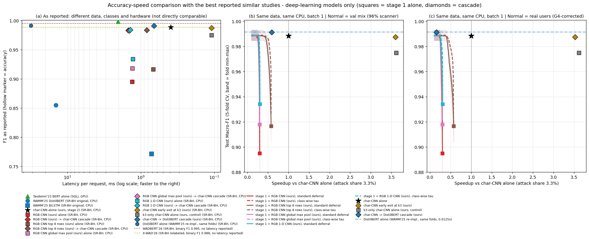

학부 졸업논문 · 보고일 2026-10-27 · 직전 보고(2026-10-25) 이후분
직전 보고에서 남겨 둔 후보 A(앞에 문자 단위 CNN, 뒤에 트랜스포머)를 측정했습니다. 비교 대상으로는 같은 SR-BH 데이터를 쓰고 지연까지 보고한 유사 연구 중 딥러닝 최고 모델인 DistilBERT 를 같은 데이터·같은 fold·같은 CPU 에서 재구현했습니다. 판정 기준은 두 번 모두 학습 전에 저장소에 적어 두었습니다.
용어는 직전 보고와 같습니다. 이 보고의 "속도 배수"는 재구현 DistilBERT 단독의 요청당 지연을 비교 구성의 평균 지연으로 나눈 값입니다(1보다 크면 빠름). 공격 비율 3.3% 로 환산했고, 지연은 전처리를 포함한 CPU 스레드 1개·요청 하나씩의 중앙값입니다.
유사 연구(2025년 WAMM)는 SR-BH 에서 DistilBERT 가 Macro-F1 0.8547, 요청당 14.4ms 라고 보고했습니다. 그러나 그 연구는 13개 클래스·128 토큰·CPU 8개를 써서 우리 값과 직접 비교할 수 없습니다. 그래서 같은 사전학습 모델(distilbert-base-uncased)을 우리 4분류·같은 fold 에 학습했습니다.
| 항목 | 유사 연구 | 이번 재구현 |
|---|---|---|
| 클래스 | 13종 | 4종(우리 데이터 구성) |
| 최대 길이 | 128 토큰 | 512 토큰 — 128 이면 요청의 6.9% 가 잘려서, 상대에게 유리한 쪽으로 바꿈 |
| 학습 | 3 에폭 · 배치 16 · 학습률 2e-5 · AdamW | 3 에폭 · 배치 16 · 학습률 2e-5 · Adam(가중 감쇠 없음) |
| 지연 측정 | CPU 8개 | CPU 스레드 1개 · 요청 하나씩 |
같은 기기에서 잰 요청당 지연은 문자 단위 CNN 0.563ms, DistilBERT 45.15ms 로 80.2배 차이였습니다. 캐스케이드는 모든 요청을 문자 단위 CNN 으로 먼저 판정하고, 확신이 낮은 요청만 DistilBERT 로 넘깁니다. 넘김 기준은 fold 마다 검증 데이터에서 골랐습니다.
실제 사용자 요청 기준으로 다음 셋을 모두 채우면 "재구현 DistilBERT 단독보다 위"로 적기로 했습니다.
씨앗 43 확인은 씨앗 42 결과를 본 뒤 따로 기준을 적었고(4절의 평균 방식 정정을 반영), 실패하면 "씨앗 42 의 결과가 재현되지 않았다"고 쓰겠다는 문장까지 미리 정해 두었습니다.
| 구성 (씨앗 42) | Macro-F1 | DistilBERT 대비 | 속도 배수 | 판정 |
|---|---|---|---|---|
| DistilBERT 단독(재구현) | 0.9914 | — | 1 | 비교 대상 |
| 문자 단위 CNN 단독 | 0.9884 | −0.30%p | 80.2 | 위가 아님 (0.003%p 차로 ③ 실패) |
| 문자 단위 CNN → DistilBERT | 0.9911 | −0.03%p | 12.3 | 위 |
캐스케이드의 fold 별 배수는 46.9 · 47.7 · 80.2 · 2.95 · 80.2 배, 실제 사용자 정상 요청의 넘김 비율은 평균 7.1% 였습니다. DistilBERT 가 문자 단위 CNN 보다 0.30%p 높았지만 유의하지 않았습니다(p 0.57).
처음에는 다섯 fold 배수의 단순 평균인 51.6배를 적었습니다. 예를 들어 두 fold 가 있는데 한쪽은 넘김이 거의 없어 80배 빠르고 다른 쪽은 넘김이 많아 3배 빠르다면, 실제로 드는 시간은 느린 쪽이 좌우합니다. 그런데 배수를 그냥 평균하면 (80 + 3) / 2 ≈ 41배가 되어 느린 쪽이 거의 묻힙니다. 배포했을 때의 비용을 나타내려면 평균 지연(fold 넘김 비율의 평균)으로 배수를 다시 내야 하고, 이것은 fold 배수의 조화평균과 같습니다(위 예에서는 약 5.8배). 이렇게 고치면 51.6배는 12.3배가 됩니다. 1.2배 기준을 넘으므로 판정은 그대로이고, 씨앗 43 판정부터는 이 방식으로 미리 고정했습니다. 같은 이유로 "문자 단위 CNN 단독보다 1.56배 느리다"던 값도 6.5배 느리다로 고쳤습니다.
DistilBERT 를 씨앗 43 으로 다시 학습해(fold 당 약 21분) 같은 규칙을 적용했습니다. 앞단의 문자 단위 CNN 은 직전 보고의 씨앗 43 모델을 그대로 썼고, 지연은 씨앗 42 때의 측정값을 그대로 썼습니다(지연은 가중치 값과 무관합니다).
| 조건 | 씨앗 42 | 씨앗 43 | 기준 |
|---|---|---|---|
| ① 평균 속도 배수 | 12.3 ✓ | 10.6 ✓ | 1.2 이상 |
| ② 가장 느린 fold | 2.95 ✓ | 3.93 ✓ | 1 초과 |
| ③ DistilBERT 대비 Macro-F1 | −0.03%p ✓ | −0.32%p ✗ | −0.3%p 이상 |
| 판정 | 위 | 위가 아님 |
씨앗 43 의 Macro-F1: DistilBERT 단독 0.9947, 캐스케이드 0.9914, 문자 단위 CNN 단독 0.9862. 캐스케이드 fold 별 배수 3.93 · 6.91 · 80.1 · 20.3 · 80.2 배.
허용폭을 0.02%p 넘긴 경계 실패지만 우연으로 보기는 어렵습니다. 씨앗 43 에서는 다섯 fold 모두 캐스케이드가 낮았고(−0.38 · −0.11 · −0.44 · −0.21 · −0.48%p), 보정 t-검정으로 유의했습니다(p 0.038). 반대로 씨앗 42 의 "같은 정확도"는 DistilBERT 가 유독 약했던 fold 하나(0.9811)에서 캐스케이드가 0.76%p 앞선 것이 평균을 끌어올린 모양이었습니다.
달라진 쪽은 캐스케이드가 아니라 비교 대상입니다. 캐스케이드 Macro-F1 은 0.9911 → 0.9914 로 거의 같았는데, DistilBERT 단독이 0.9914 → 0.9947 로 올랐습니다. 요청의 약 93% 는 문자 단위 CNN 의 판정이 그대로 나가므로 캐스케이드 정확도는 문자 단위 CNN 쪽에 묶이고, 트랜스포머가 강해진 만큼 따라가지 못합니다. 이번 씨앗에서 DistilBERT 와 문자 단위 CNN 의 차이는 +0.85%p(p 0.074)로 씨앗 42 의 세 배 가까이 됐습니다. 또 DistilBERT 는 다섯 fold 중 셋에서 마지막 에폭에 검증 점수가 떨어져(가장 큰 폭 0.9963 → 0.9646), 이 학습 설정 자체가 씨앗에 따라 흔들립니다.
미리 정한 문장대로 "씨앗 42 의 결과가 씨앗 43 에서 재현되지 않았다"로 기록하고, 4절의 "위"는 씨앗 42 한정으로 낮추겠습니다.

그림의 캐스케이드 점은 씨앗 42 값입니다. 씨앗 43 에서는 이 점이 DistilBERT 가로선보다 0.33%p 아래로 내려가므로, 그림만 보고 "위"라고 읽히지 않도록 본문에 씨앗 조건을 함께 적겠습니다.
측정 기기: AMD Ryzen 7 9800X3D(8코어 16스레드), RAM 32GB, NVIDIA RTX 4080 SUPER, Windows 11, PyTorch 2.6.0(CUDA 12.4). 측정일 2026-10-25(씨앗 42 학습·지연) · 2026-10-27(씨앗 43 학습). 지연은 검증 데이터에서 뽑은 2,000건을 30회 반복한 중앙값이고, 같은 실행 안의 값끼리만 배수를 계산했습니다. 이번 실행의 문자 단위 CNN 지연(0.563ms)은 직전 보고(0.345ms)보다 길게 재졌는데, 측정일의 기기 상태 차이라 판정에는 같은 실행의 비율(80.2배)만 썼습니다. 판정 기준은 학습 전에(씨앗 42 00c52ce · 씨앗 43 f37fd70), 모델·판정 코드는 결과 전에(3f5aeed · 559c8df) 저장소에 커밋했습니다. 평균 방식 정정과 씨앗 43 판정 출력은 42c7596 입니다.